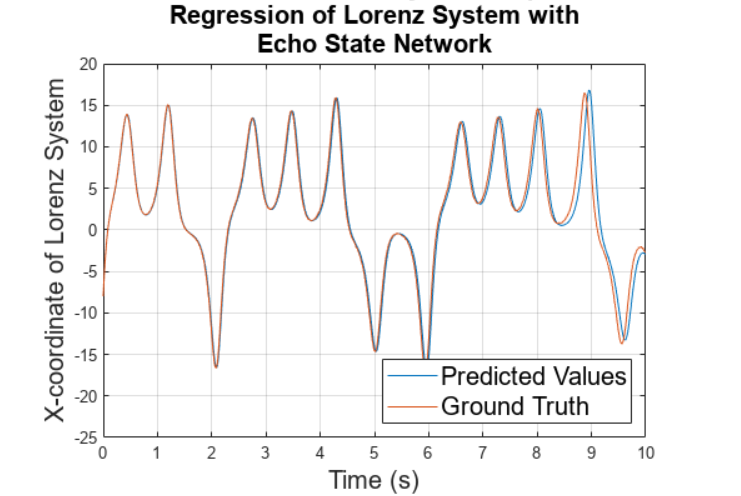
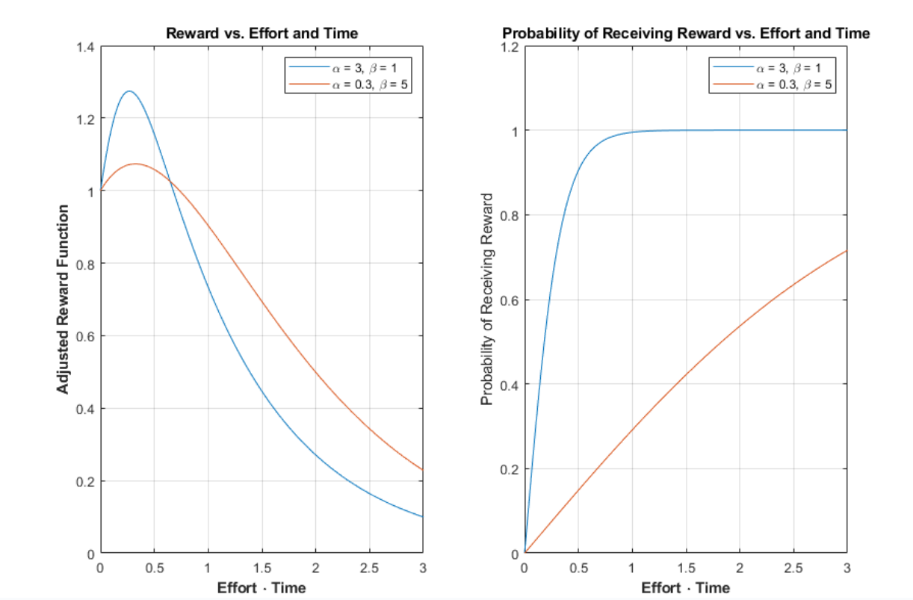

ATTICUS REX
Innovation and Research
Modeling
Echo State Networks for Dynamical System Modeling:
This paper develops a framework for improving upon traditional regression methods to model discrete nonlinear dynamical systems. This framework is derived from a branch of recurrent neural-networks called Echo State Networks (ESNs). This report compares this methodology to the famous Sparse Identification of Nonlinear Dynamics (SINDy) framework developed by Brunton et al. This investigation specifically analyzes the Lorenz System as an example nonlinear and chaotic system. In the models investigated within this report, the Linear ESN model outperforms the SINDy algorithm when noise in the system is sufficiently low. The SINDy algorithm is also far more computationally intensive, requiring much more data to yield comparable results. In addition, SINDy requires sampling of a numerical derivative of a signal. Using finite difference methods amplifies any noise present in the signal, and thus, a direct, discrete method for calculating a regularized derivative is proposed, based on the Total Variation Regularized Derivative (TVD).
Full Report


Using Physics Informed Neural Networks (PINNs) to Solve the Heat Equation:
This paper examines the use of a novel technique that uses the auto-differentiation ca-
pability of neural networks to solve the heat equation. This is a method that was proposed
in Raissi, 2019 et al. This method makes use of neural networks as universal function
approximators to match the solution to a partial differential equation.

Dopamine, Mimicry, and Value Alignment: Artificial Intelligence and Addiction:
Computer scientists, philosophers, economists, and many others have voiced concerns about Artificial Intelligence (AI) for decades. This paper provides a framework and a review of how AI can be addictive by mimicking neuropleasurable stimuli for humans. It argues that this problem is exacerbated when the values of the humans interacting with AI and the values of the AI are poorly aligned. The paper examines the role of the dopaminergic reward system in powerful behavior reinforcement, what economic gains and externalities this causes, and how this may disproportionately affect certain subsets of the population. This paper also proposes a model to illustrate how, when considering factors of time, effort, and expected reward, the magnitude of the reward is not deterministic of human action. Lastly, the paper examines ethical frameworks and contemporary theories governing the use of AI to produce large-scale addiction, big-nudging, and general manipulation.
Full Report